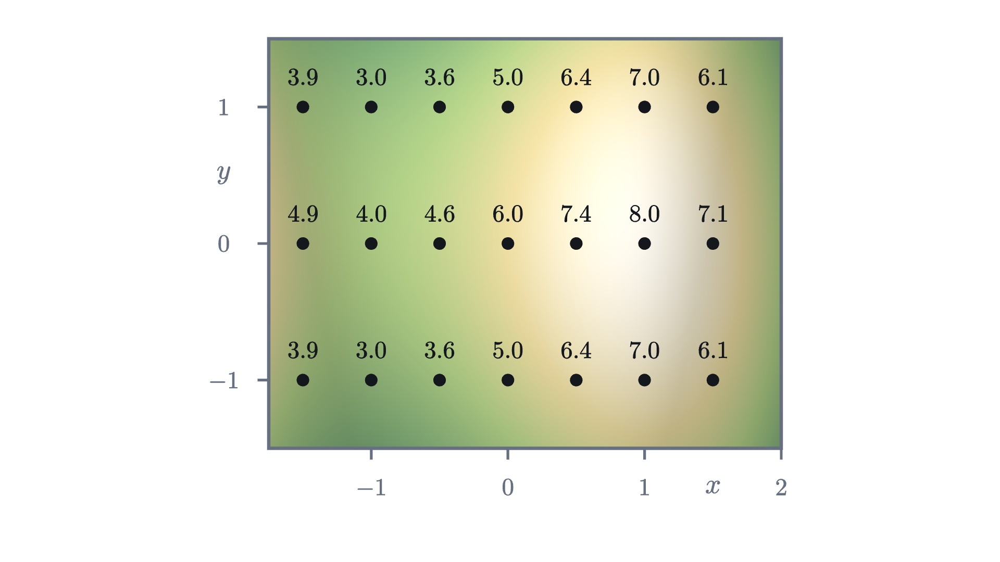
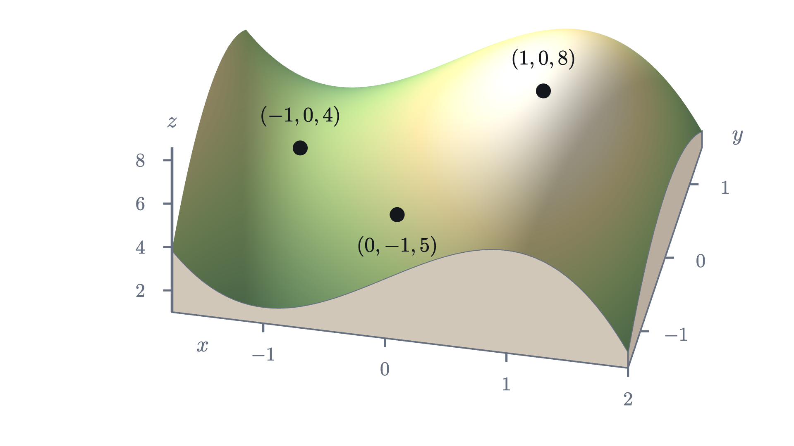
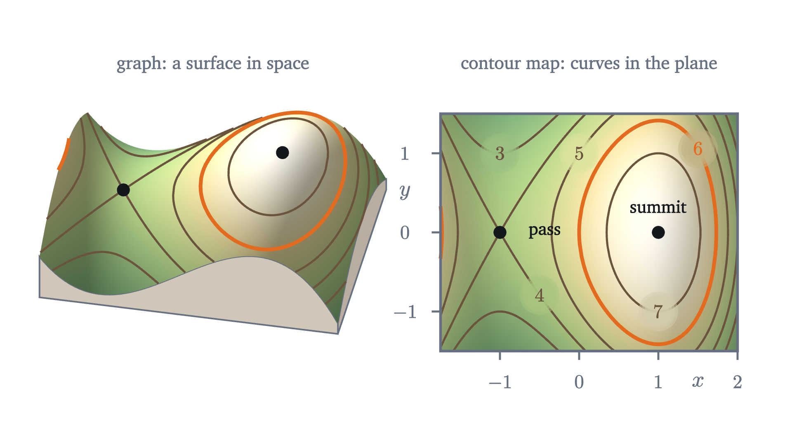
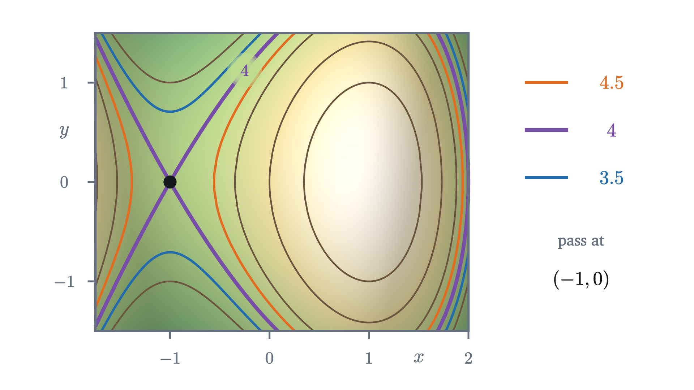
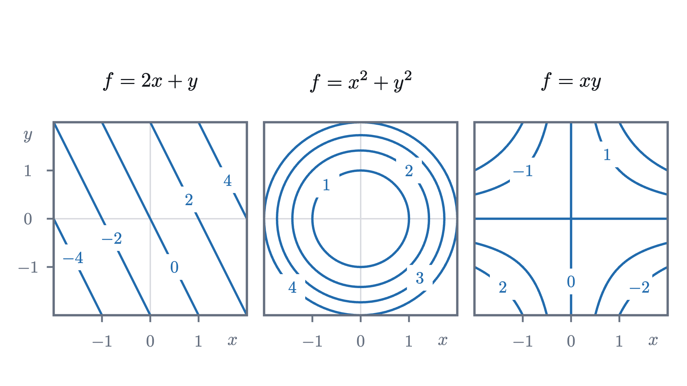

Surfaces and contour maps: functions of two variables
A hiking map shows a mountain on flat paper. Its contour lines are the level sets of a function of two variables, and their spacing measures steepness.
AssumesWhat is a derivative? Speed at a single instantMaxima and minima: where the slope is zero
A sheet of paper is flat and a mountain is not. Yet a hiker with a good map can tell, before leaving the parking lot, where the summit is, which slope is too steep to climb, and where the easiest crossing between two peaks lies. All of that information is carried by thin brown lines with numbers on them. How does a flat drawing hold a third dimension?
Temperature across a metal plate and pressure on a weather chart also depend on two inputs at once, and the contour map is the standard way to see any such quantity. We will build the map for one hill, then say exactly what was built.
A height for every point of the map
Start with what a surveyor would collect. Put the origin at a marker post, measure $x$ in kilometers east of it and $y$ in kilometers north, and at each of a grid of positions write down the height of the ground. To keep the numbers small we measure height in hundreds of meters, so a height of 6 means 600 m.

Read along the middle row, where $y = 0$. Going east the heights run 4.9, 4.0, 4.6, 6.0, 7.4, 8.0, 7.1. So the ground dips, climbs to 8.0 at the point $(1, 0)$, and falls again. The rows above and below are each lower than the middle row by exactly 1.
Pause and try
Using only the 21 numbers in the figure, where would you guess the summit is? A hiker walks from the west edge to the summit along the middle row. What is the lowest height on that walk, and is the ground at that place lower or higher than the ground just north and south of it?
Show answerHide answer
The largest number is 8.0 at $(1, 0)$, and its neighbors on all four sides are lower, so the summit is at or near $(1, 0)$. On the walk along the middle row the lowest height is 4.0, at $(-1, 0)$. The points north and south of it, $(-1, 1)$ and $(-1, -1)$, are at 3.0. So that place is the low point of the east-west walk and at the same time the high point of the north-south line through it. A place like that is called a pass.
Twenty-one numbers are a sample. The hill itself has a height above every point of the map, and for this lesson the hill is given by a formula:
Check it against the figure: $f(0, 0) = 6$, $f(1, 0) = 6 + 3 - 1 = 8$, and $f(-1, 1) = 6 - 3 + 1 - 1 = 3$. The term $-y^2$ is why the rows at $y = \pm 1$ are lower than the middle row by 1. The map covers $-1.75 \le x \le 2$ and $-1.5 \le y \le 1.5$.
A rule like this, which takes a pair of numbers and returns one number, is the object the rest of the series studies.
For the hill, $D$ is the rectangle the map covers, and the range is the set of heights that occur on it, from 1.75 up to 8 at the summit. (The value 1.75 occurs at the eastern corners $(2, \pm 1.5)$ and at $(-1, \pm 1.5)$, due north and south of the pass.) “Exactly one” matters: the ground cannot be at 300 m and at 400 m over the same spot, and we will use that below.
The graph is a surface
The graph of a function of one variable is a curve in the plane: the input uses one axis and the output the other. Our input already uses two axes, so the output needs a third.

The graph of a function of two variables is a surface, and for our $f$ it is the hill itself, with a summit over $(1, 0)$, a pass over $(-1, 0)$, and ground that rises again toward the west edge, the shoulder of a neighboring hill.
The picture is easy to like and hard to use. Try to read from it the height at $(0.5, 1)$, or to decide whether the north face is steeper than the east face. A drawing of a surface distorts distances and cannot be measured with a ruler. That is the map maker’s problem: the graph lives in space, and paper does not.
Slicing the hill at a fixed height
The map maker’s solution is to stop asking “how high is this point?” and ask the reverse question: “which points are at this height?”
Flood the valley until the water surface stands at height 6. The water surface is a horizontal plane, and its edge, the shoreline, is the set of points of the hill that are exactly at height 6. Now drain the water and keep the shoreline as a mark on the ground.
Seen from directly above, a shoreline is a curve in the $(x, y)$ plane, which paper can show without distortion. The height that the view from above throws away is put back as a label on the curve.
We can find the height-6 curve from the formula. A point $(x, y)$ is on it when $f(x, y) = 6$, that is, when
For $y$ to exist the right side must not be negative. Since $x(3 - x^2) \ge 0$ exactly when $x \le -\sqrt 3$ or $0 \le x \le \sqrt 3 \approx 1.73$, the main part of the curve lies over $0 \le x \le \sqrt 3$. For each such $x$ there are two points, $y = \pm\sqrt{3x - x^3}$, one north of the $x$-axis and one south. At $x = 1$ they are at $y = \pm\sqrt 2 \approx \pm 1.41$. The two halves join at $(0, 0)$ and at $(\sqrt 3, 0)$, so the curve is a closed loop around the summit that passes through the marker post. (The other range, $x \le -\sqrt 3$, contributes a sliver at the far west edge of the map, where the neighboring hill pokes above 6.)
Pause and try
Find the points where the height-7 curve crosses the $x$-axis and where it crosses the line $x = 1$. Is the height-7 curve inside or outside the height-6 loop?
Show answerHide answer
On the line $x = 1$ the height is $f(1, y) = 8 - y^2$, which equals 7 when $y = \pm 1$. On the $x$-axis we need $6 + 3x - x^3 = 7$, or $x^3 - 3x + 1 = 0$. A calculator gives $x \approx 0.347$ and $x \approx 1.532$ on the map (check: $3(0.347) - 0.347^3 \approx 1.041 - 0.042 = 0.999$). All four points are inside the height-6 loop, which reaches $y = \pm 1.41$ on $x = 1$ and runs from $x = 0$ to $x = 1.73$ on the axis. Higher ground is nearer the summit, so the 7 curve is nested inside the 6 curve.
These curves have a name that does not depend on hills.
Notice where each object lives. The graph is a surface in space. A level set is a set of points in the domain, in the plane. The mark on the hillside is where the graph meets the horizontal plane $z = c$, and the level set is that mark seen from directly above.

What the lines can and cannot do
Two rules about contour lines are usually given to hikers as folklore. Both are consequences of the definitions, and the first has a one-line proof.
So the 300 m line and the 400 m line never meet, and the proof used only the words “exactly one” in the definition of a function.
The theorem says nothing about a level set meeting itself, and on our hill one does. Look at level 4, the height of the pass. The equation $f(x, y) = 4$ rearranges to $y^2 = 2 + 3x - x^3$, and the cubic factors:
Both signs give $y = 0$ at $x = -1$. The two branches pass through the same point $(-1, 0)$ with different directions, and the level set is shaped like an X there.

Stand at the pass. To the east and to the west the ground rises; to the north and south it falls away. The level-4 set is the boundary between “higher than me” and “lower than me”, and at a pass that boundary has to separate four regions, which is why it crosses. A contour line that crosses itself marks a pass (mathematicians say saddle point).
Level sets also need not be curves at all. At level 8 the level set of our $f$ on the map is the single point $(1, 0)$, the summit. At level 9 it is empty, since no ground is that high. And a flat plateau, a region where $f$ is constant, is a level set with area. “Level curve” describes the usual case; “level set” is always correct.
Why close lines mean steep ground
The second piece of folklore is that closely spaced contour lines mean steep ground. This one can be made exact. Walk in a straight line across the map. Each time you pass from one contour line to the next, your height has changed by one contour interval. If the lines are far apart, you walked a long way for that change; if they are close, you got it in a few steps.
On this route the height is $p(x) = f(x, 0) = 6 + 3x - x^3$. West of the summit the route crosses the 6 line at $x = 0$ and the 7 line at $x \approx 0.347$. East of the summit it crosses the 7 line again at $x \approx 1.532$ and the 6 line at $x = \sqrt 3 \approx 1.732$.
Pause and try
On which side of the summit is the hill steeper along this route, and by roughly what factor? Use only the four crossing points just listed.
Show answerHide answer
On the west side the height rises by 1 over a distance of $0.347$, an average slope of $1 / 0.347 \approx 2.9$. On the east side it falls by 1 over a distance of $1.732 - 1.532 = 0.200$, an average slope of about $-5.0$. The east side is steeper by a factor of about $1.7$. In ordinary units, a slope of 5 here means 500 m of height per kilometer of map distance, a 50% grade.
That computation is the method: the change in height between adjacent lines is the contour interval $\Delta$, the map distance between them is $d$, and their quotient is the average slope. Here is the precise statement, including what it says about the slope at individual points.
The segment from $P$ to $Q$ is your straight route between two contour lines. The function $\varphi$ is the height profile, the curve in the right panel of the last figure, and $\varphi'$ is its derivative, the slope of the profile. Part (3) is the hiker’s rule with a number in it: on ground nowhere steeper than $M$, contour lines one interval apart are never closer than $\Delta / M$. Turned around, lines closer than that prove the ground is steeper than $M$ somewhere between them.
Check part (2) on the east side of our route. The average slope between the 7 line and the 6 line was $-5.0$. The profile has $p'(x) = 3 - 3x^2$, and $3 - 3x^2 = -5$ at $x = \sqrt{8/3} \approx 1.633$, which does lie between $1.532$ and $1.732$.
One caution. The quotient $\Delta / d$ is the slope along the route you measured. A route that cuts across the lines at a slant covers more map distance between them and gives a smaller slope, and a route along a contour line gives slope zero. The steepest slope comes from measuring straight across the lines. Making “the slope at a point in a given direction” precise is the subject of the next lesson.
Three maps to know by sight
The same construction applies to any function of two variables. Three simple maps are worth recognizing.

The third map, $f(x, y) = xy$, is a pass with nothing else around it: its level set at 0 is the pair of coordinate axes, crossing at the origin as the level-4 set crosses at the pass of our hill. Problem 4 works it out.
Reading errors to avoid
Check yourself
Two adjacent contour lines on a map with a contour interval of 100 m are 250 m apart, measured straight across on the map. What is the average slope of the ground between them along that line?
We began with a mountain that would not fit on paper. The step that made it fit was to turn the question around, from “what is the height here?” to “where is the height equal to $c$?”, because the answers to the second question are sets of points in the plane. The same reversal works for any function of two variables, and later lessons lean on it: the direction of steepest climb and the highest point along a trail can both be read from how the level curves sit.
Problems
Problems 1 and 2 repeat the moves of the lesson. Problems 3 to 5 ask you to combine them or explain something. The last two go further. The hill is $f(x, y) = 6 + 3x - x^3 - y^2$ throughout.
Problem 1
Compute the height of the hill at $(2, 1)$, at $(-1, -1)$ and at $(0.5, 0.5)$. Which two of these points lie on the same level set? Is $(0.5, 0.5)$ inside or outside the level curve at height 7 that surrounds the summit?
Show solutionHide solution
$f(2, 1) = 6 + 6 - 8 - 1 = 3$. $f(-1, -1) = 6 - 3 + 1 - 1 = 3$. $f(0.5, 0.5) = 6 + 1.5 - 0.125 - 0.25 = 7.125$. The first two points are both at height 3, so both belong to the level set at level 3 (they lie on different pieces of it, one near the east edge and one south of the pass). The third point is at height $7.125 > 7$. The ground inside the 7 loop is the ground higher than 7, so $(0.5, 0.5)$ is inside it, though only just.
Problem 2
Let $f(x, y) = 3x - 4y$. Describe the level set at level $c$. Find the distance between the level sets at levels $c$ and $c + 5$, measured straight across them, and the slope of the plane in that direction.
Show solutionHide solution
The level set is the line $3x - 4y = c$, that is, $y = \tfrac34 x - \tfrac c4$. These lines all have slope $\tfrac34$, so measure along the perpendicular through the origin, in the direction of the unit vector $\left(\tfrac35, -\tfrac45\right)$. Its point at distance $t$ from the origin is $\left(\tfrac{3t}{5}, -\tfrac{4t}{5}\right)$, where $f = \tfrac{9t}{5} + \tfrac{16t}{5} = 5t$. So level $c$ is met at $t = c/5$ and level $c + 5$ at $t = c/5 + 1$: the lines are exactly 1 apart for every $c$. The slope straight across is $\Delta / d = 5 / 1 = 5$.
Problem 3
Consider the east-west line $y = 1$ on the hill. Show that the height along it is $7 - (x - 1)^2(x + 2)$. Deduce that this line meets the level curve at height 7 at exactly one point of the map, and that it never enters the region above 7. What does the line look like relative to that level curve?
Show solutionHide solution
Along $y = 1$, $f(x, 1) = 5 + 3x - x^3$. Then $7 - f(x, 1) = x^3 - 3x + 2$. Since $x = 1$ is a root, divide: $x^3 - 3x + 2 = (x - 1)(x^2 + x - 2) = (x - 1)^2(x + 2)$. So $f(x, 1) = 7 - (x - 1)^2(x + 2)$. On the map $x \ge -1.75$, so $x + 2 > 0$, and $(x - 1)^2 \ge 0$; hence $f(x, 1) \le 7$, with equality only at $x = 1$. The line touches the 7 curve at the single point $(1, 1)$ and stays on the low side of it everywhere else. It is tangent to the level curve there: it grazes it without crossing. (A path that just touches a level curve at its highest point is the central picture in the lesson on Lagrange multipliers.)
Problem 4
A student’s sketch of a contour map shows the 300 m line and the 400 m line crossing at a point $A$. Explain why this cannot be the contour map of a function. What feature of real terrain might the student have been trying to draw, and what does a correct map of it look like?
Show solutionHide solution
At $A$ the height would be both 300 m and 400 m, but a function assigns exactly one value to each point of its domain, so level sets at different levels are disjoint. Real terrain that tempts this drawing is a cliff. At a vertical cliff the ground changes height by 100 m over almost no map distance, and the contour lines run together into what looks like a single line, without crossing. An overhang, where the ground really does have two heights above one map position, is not the graph of a function, and a contour map cannot show it.
Problem 5
Let $f(x, y) = xy$. (a) Describe the level set at level $c$ for $c > 0$, $c = 0$ and $c < 0$. (b) For $c > 0$, find the point of the level set nearest the origin in the first quadrant and its distance from the origin. (c) Use (b) to decide whether the surface gets steeper or gentler as you walk away from the origin along the line $y = x$.
Show solutionHide solution
(a) For $c \ne 0$ the level set is the hyperbola $y = c/x$, which has two branches: in the first and third quadrants if $c > 0$, in the second and fourth if $c < 0$. For $c = 0$ the equation $xy = 0$ holds when $x = 0$ or $y = 0$, so the level set is the two coordinate axes, which cross at the origin. (b) By symmetry in $x$ and $y$ the nearest point is on the line $y = x$: there $x^2 = c$, so the point is $(\sqrt c, \sqrt c)$ at distance $\sqrt{2c}$. (Indeed the squared distance of $(x, c/x)$ from the origin is $x^2 + c^2/x^2 = (x - c/x)^2 + 2c \ge 2c$.) (c) Levels $1, 2, 3, 4$ meet the line $y = x$ at distances $1.414$, $2$, $2.449$, $2.828$ from the origin. The gaps are $0.586$, $0.449$, $0.379$, so the average slopes are $1.71$, $2.23$, $2.64$: the surface gets steeper. (Along $y = x$ at distance $s$ from the origin the height is $s^2/2$, with derivative $s$, in agreement.)
Problem 6
The functions $f(x, y) = x^2 + y^2$ and $g(x, y) = \sqrt{x^2 + y^2}$ both have circles about the origin as level sets. (a) Draw, or describe, the contour maps of each at levels $1, 2, 3, 4$. (b) What does the difference between the two maps say about the two surfaces? (c) Show in general that if $g(x, y) = \varphi(f(x, y))$ for some function $\varphi$ of one variable, then every level set of $f$ is contained in a level set of $g$.
Show solutionHide solution
(a) For $f$ the circles have radii $1$, $1.414$, $1.732$, $2$. For $g$ the level set at level $c > 0$ is the circle of radius $c$, so the radii are $1, 2, 3, 4$, evenly spaced. (b) Even spacing means the slope of $g$ straight outward is the same everywhere, $\Delta/d = 1$: its graph is a cone. The crowding circles of $f$ mean its graph steepens outward: a bowl. The shapes of the level curves are identical, and the labels and spacing carry the difference. (c) Suppose $P$ and $Q$ are in the same level set of $f$, so $f(P) = f(Q) = c$. Then $g(P) = \varphi(f(P)) = \varphi(c) = \varphi(f(Q)) = g(Q)$, so $P$ and $Q$ are in the same level set of $g$, the one at level $\varphi(c)$. Here $g = \sqrt{f}$, with $\varphi(t) = \sqrt t$.
Problem 7
For the hill, the lesson showed that the level set at height 4 is $y = \pm(x + 1)\sqrt{2 - x}$. Find the slopes of the two branches at the pass $(-1, 0)$, and hence the angle of each of the four sectors into which they divide the ground near the pass. Which sectors are the higher ground?
Show solutionHide solution
Let $y = (x + 1)\sqrt{2 - x}$. By the product rule, $\dfrac{dy}{dx} = \sqrt{2 - x} + (x + 1)\cdot\dfrac{-1}{2\sqrt{2 - x}}$. At $x = -1$ the second term vanishes and the slope is $\sqrt 3$. The other branch is the negative of this one and has slope $-\sqrt 3$. A line of slope $\sqrt 3$ makes an angle of $60^\circ$ with the $x$-axis, and one of slope $-\sqrt 3$ makes $-60^\circ$. So the two sectors that contain the $x$-axis, to the east and west, each span $120^\circ$, and the two that contain the north and south directions each span $60^\circ$. On the $x$-axis near the pass, $f(x, 0) = 4 + (2 - x)(x + 1)^2 > 4$ for $x \neq -1$, so the east and west sectors are the higher ground, and the narrower north and south sectors are the lower ground.